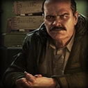
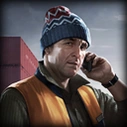
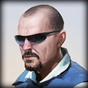

Прапор
28 августа 2024
Прапорщик на складах тыловой базы снабжения Внутренних войск, заблокировавших Норвинскую область. В период Контрактных Войн снабжал из под полы ЧВК BEAR вооружением, боеприпасами и прочим доступным имуществом.
Коллекция изображений по теме: Персонажи Escape from Tarkov

28 августа 2024
Прапорщик на складах тыловой базы снабжения Внутренних войск, заблокировавших Норвинскую область. В период Контрактных Войн снабжал из под полы ЧВК BEAR вооружением, боеприпасами и прочим доступным имуществом.
25 марта 2024
Заведующая отделением травматологии Центральной городской больницы города Таркова.
25 марта 2024
С самого зарождения конфликта Скупщик уже начинал действовать, организуя анонимные точки приёма и сбыта товара. Оставаясь инкогнито, смог организовать отлаженную сеть контрабандистов по всей Норвинской области.

25 марта 2024
Сотрудник таможенного терминала предпортовой зоны. Изначально приторговывал товарами терминала, а в ходе конфликта сколотил банду и начал стаскивать к терминалу всё, что плохо лежит в округе. Поговаривают что у него существует некая связь с Егерем и является фуфлыжником

25 марта 2024
Снабженец из контингента ООН. Сидит на одном из центральных блок-постов в предпортовой зоне Таркова. "Голубые" с самого начала конфликта мутили свой мелкий бизнес, скупая всё мало-мальски ценное на вывоз и сливая местным западное оружие, боеприпасы и кое-что из военного оборудования.
25 марта 2024
Бывший мастер Химкомбината. С самого начала работает по теме оружейных модификаций и ремонта сложного оборудования. Предпочитает работать скрытно и в одиночку, ставит интересные и сложные задачи превыше всего.
25 марта 2024
Он работал директором на большом рынке, расположенном в пригороде Таркова. Продает все, что связано с одеждой и снаряжением.

25 марта 2024
Работал в лесном охотничьем хозяйстве Приозерского заповедника. Самая страшная тварь которую можно встретить в лесу. Охотник-профессионал и специалист по выживанию, охранял и охраняет, свой егерский обход от разного рода агрессивных особей.